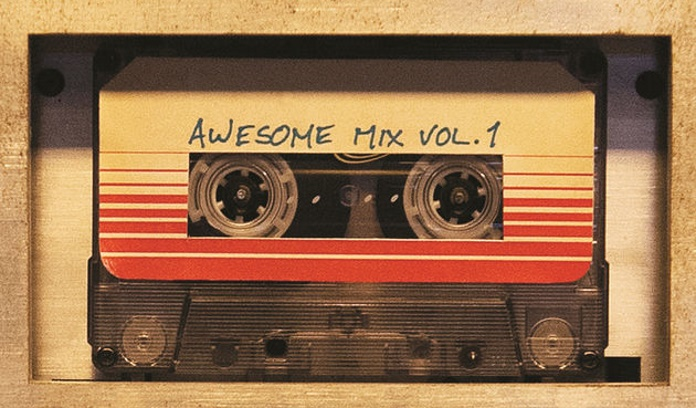

Inventado pelo engenheiro Peter Carl Goldmark (empregado da Columbia Records), o disco de vinil surgiu para substituir os velhos discos de 78 rpm, e em 21 de junho de 1948, a gravadora Columbia apresenta o novo formato em uma coletiva de imprensa, no Hotel Waldorf Astoria, em Nova Iorque.
Vinil 10pol 78rpm
Vinil 12pol 45rpm
Compacto 45rpm
A capacidade máxima de rodar de 23 a 30 minutos por cada lado do disco (contendo, normalmente, diversas faixas em cada lado) comportam o lançamento de um álbum completo, ao contrário dos compactos simples que foram lançados em 31 de março de 1949 pela gravadora concorrente RCA-Victor e que passaram a ser utilizados para lançar singles musicais.

Fita cassete
Stereo 8
Desde o início da sua comercialização, em 1948, enfrentaram a concorrência de diversos formatos similares, especialmente daqueles baseados em tecnologias que envolviam fitas magnéticas. De menção obrigatória pelo seu impacto na cultura popular são a fita cassete e o cartucho ou stereo 8 que tiveram grande importância comercial para a indústria fonográfica. Entretanto, nenhum desses formatos chegou a ameaçar a posição dos LPs como principal meio de armazenamento de áudio entre os anos 1960 e os anos 1980. Foi apenas com a invenção do CD, um meio de armazenamento digital, em meados desta última década que iniciou-se o declínio do disco de vinil como principal formato de comercialização de música gravada.
O álbum The Voice of Frank Sinatra, do cantor Frank Sinatra - originalmente lançado em 1946 - foi relançado no formato de 10 polegadas (25 centímetros) e o álbum Mendelssohn: Concerto In E Minor For Violin And Orchestra Opus 64, do violinista Nathan Milstein foi o primeiro a ser lançado no formato de 12 polegadas (30 centímetros).
A existência de dois formatos distintos foi uma realidade no início da comercialização do novo formato devido à estratégia definida pela gravadora: acreditava-se que não havia demanda para tanto espaço de armazenamento entre os consumidores de música popular. Assim, reservaram-se os discos maiores - e com maior capacidade - para a comercialização de música clássica e os discos menores para a venda de música popular. Ao final do ano, a gravadora contabilizaria mais de 1 milhão e 250 mil discos comercializados no novo formato.
No Brasil, o primeiro LP de 10 polegadas foi lançado comercialmente em janeiro de 1951, pela gravadora Sinter, através do selo Capitol. Era Carnaval em "Long Playing", uma coletânea de marchinhas para o Carnaval daquele ano, contendo canções interpretadas por Heleninha Costa, Geraldo Pereira, Os Cariocas, Oscarito e outros artistas da época.
Exatamente cinco anos depois, em janeiro de 1956, a mesma gravadora lançaria também o primeiro disco de vinil de 12 polegadas no Brasil, 5º Aniversário, uma coletânea em comemoração exatamente do aniversário de 5 anos do primeiro lançamento mas é apenas com o aparecimento da bossa nova que o disco de vinil começa a se estabelecer comercialmente, já que, além do barateamento dos toca-discos, este estilo musical possibilitava uma maior liberdade do artista, tornando-o mais importante do que o disco: não se consumiam mais as canções deste ou daquele artista, mas a "obra" que o álbum representava.
ÁLBUNS MAIS VENDIDOS DA HISTÓRIA
Esses são os álbuns em LP mais vendidos da história. Devido a falta de controle da época, alguns desses podem variar dependendo da pesquisa feita.
O mercado do vinil atingiu o seu auge na década de 1980. Entretanto, com a invenção do Compact Disc (CD), que ficou por muitos anos em desenvolvimento e foi finalmente lançado em agosto de 1982, na Alemanha, pela gravadora PolyGram, trouxe um novo conceito: a gravação e reprodução digital, substituindo a agulha que realiza um movimento análogo ao do som gravado no disco por um raio laser que lê os bits gravados no disco e os traduz em sons audíveis, maior capacidade, durabilidade e clareza sonora, com a eliminação de chiados.
Nos Estados Unidos, já em 1986 as vendas de CDs ultrapassaram aquelas de discos de vinil.
No Brasil, o primeiro CD foi lançado em 1986, mas o velho formato manteve-se firme até 1991, quando foram vendidos 28,4 milhões de LPs no país. Entretanto, a partir de então, a queda das vendas foi vertiginosa:
1993
16,4 milhões de LPs
1994
14,5 milhões de cópias.
1995
Entre 5 e 10 milhões de cópias.
1996
1,6 milhão de unidades
Desse modo, as grandes gravadoras produziram LPs até 31 de dezembro de 1997, fazendo o vinil praticamente sumir das prateleiras do varejo fonográfico. Assim, em 2002, o CD já dominava 72% do mercado mundial.
Nos Estados Unidos, o comércio de vinil voltou a crescer acima de 50% em 2014. De acordo com o The Wall Street Journal, ao todo 9,2 milhões de LPs foram vendidos naquele ano, um crescimento de 53% em relação a 2013. No total, a pesquisa de Nielsen SoundScan aponta que as compras dos discos nos EUA representam 6% de todo consumo de música no país. Entre os artistas que mais venderam disco de vinil, estão: Artic Monkeys e Lorde, entre outras bandas que atraem um público mais jovem no país e no restante do mundo.
No Brasil, na segunda metade de 2008, os proprietários da gravadora independente Deckdisc, informados do volumoso crescimento na venda de vinis nos Estados Unidos e na Europa, depararam-se com a possibilidade de adquirir o maquinário da antiga fábrica da Polysom, empresa fundada em 1999, em Belford Roxo, e que havia falido em 2007 - e reativá-la. Em setembro do mesmo ano, começaram as diligências e os estudos que resultaram na aquisição oficial, em abril de 2009. No final de novembro de 2009, depois de meses de restauração, a fábrica finalmente fica pronta, sendo feitos os primeiros testes com os LPs produzidos. A fábrica tem capacidade para produzir 28 mil LPs e 14 mil compactos por mês. Estabeleceu-se como única fábrica de vinis de toda a América Latina, condição que se mantinha até o final do terceiro trimestre de 2017, quando a fábrica Vinil Brasil foi inaugurada.


.webp "Aphex Twin: Caustic Window (test pressing)")
.webp "Frank Wilson: Do I love you (Indeed I Do)")